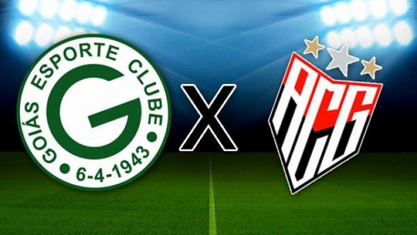

Final Goiana
O goias está classificado para as finais do goianao contra seu rival ACG, a torcida esta apreensiva pois o time é ruim.
A final de ida e volta ocorrerá no começo de abril, o jogo decisivo terá mando do Goiás E.C.

O historico recente não favorece o lado esmeraldino, com um jejum desde 2018 o Goiás busca quebrar a sequência negativa onde perdeu titulos para seu rival.
O Atletico por sua vez está confiante no título mesmo estando em pior fase.